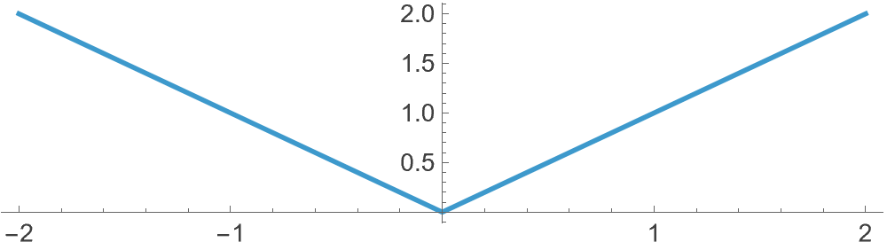
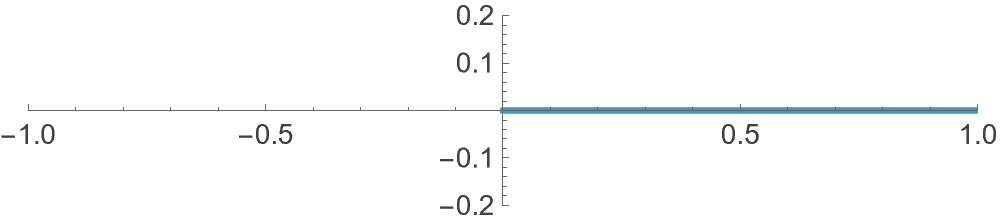
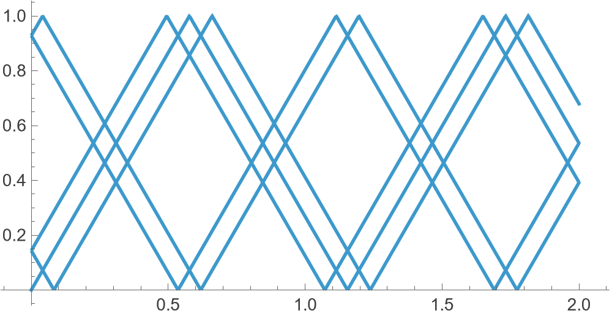
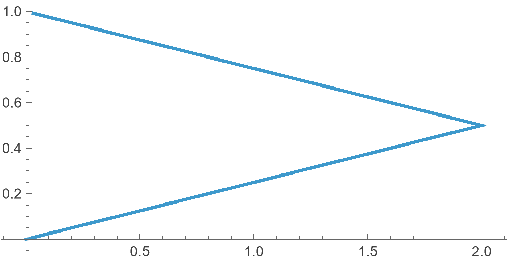
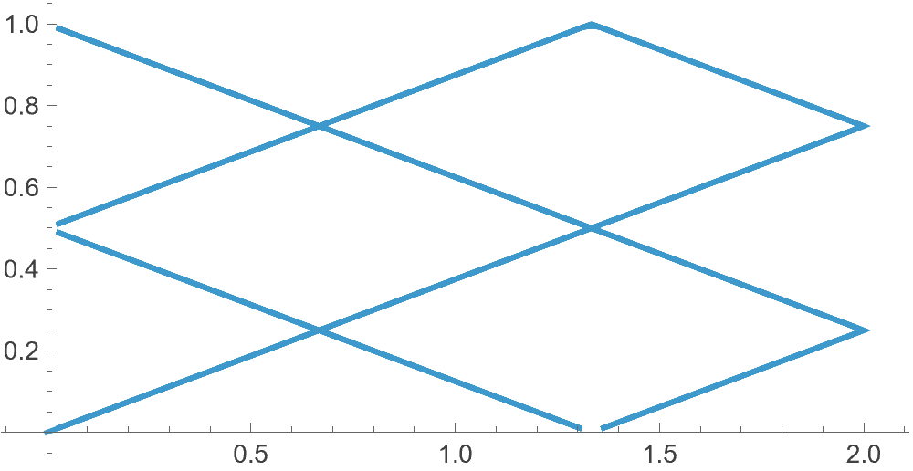
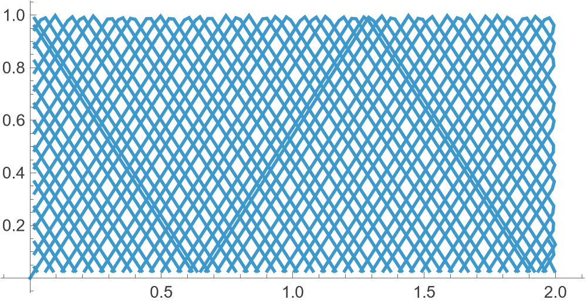

Billiards
06 April, 2026
TheThe modulus function |x| gives distance from 0, ignoring direction. Graphically, it folds the negative axis onto the positive. modulus function x ↦ |x| does more than just returning the absolute value of a number. When plotted, its graph represents sort of (exactly) a reflection:

This idea can be generalised in order to model the path that a ball of billiards takes in an ideal (infinite force, no friction, etc) environment. Starting with a single dimension, suppose we have an interval of length L:
0 ------------------------- LTo trace reflections along this line, as such:Here, each “bounce” is just the same straight motion viewed in a folded interval. In particular, we are not editing the path but the space. The path is still a straight line.
0 ----------->------------ L
|
2L -----------<------------ L
|
2L ----------->------------ 3L
|
... --<------------ 3La simple function such as f(t, L) = L − |(t mod 2L) − L| can do, so that when L = 1 we notice
- 0 ↦ 1 − |0 − 1| = 0
- 1/2 ↦ 1 − |1/2 − 1| = 1 − 1/2 = 1/2
- 3/2 ↦ 1 − |3/2 − 1| = 1 − 1/2 = 1/2
- 2 ↦ 1 − |2 − 1| = 1 − 1 = 0
which is the required behaviour. Now, the only thing that remains is to do the same thing for 2 separate dimensions and combine them. Suppose the starting point on the billiards table is (x0, y0) and the movement begins in the direction of angle θ. Let the billiards table be of length a and width b. Consider the parametric straight lines
x(t) = x0 + tcos θ
and
y(t) = y0 + tsin θ
in the xy-plane. We apply f on both of these to obtain X(t) = f(x(t), a) and Y(t) = f(y(t), b). That’s it. Now, suppose (x0, y0) = (0, 0), θ = 0 and t ∈ [0, 20], the trajectory is as follows:

Not very exciting! Let us try to change the angle a little:

When b/atan θ is rational, say 1/2, after finite number of reflections the path repeats: we need θ such that 2tan θ = 1/2. θ = tan−1(1/4) works:

or

whereas otherwise, the result is more interesting:

If you liked this, the code is available in this mathematica notebook: bill.nb.
Thanks for reading. Return to see all blog posts, or to the home page.